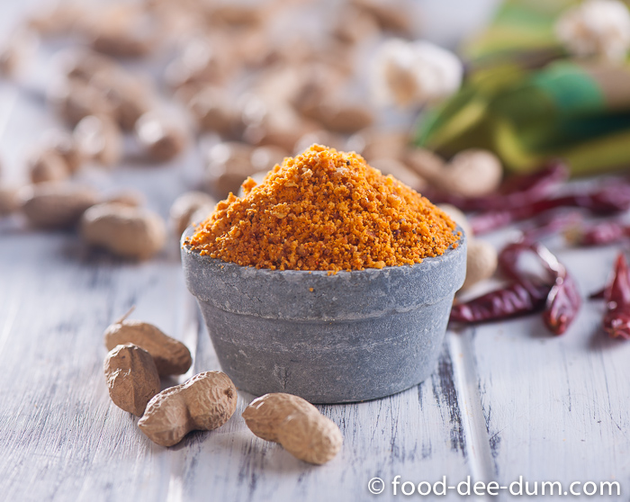

Peanut Chutney

A delicious and spicy Chutney Made with Peanuts full of nutrients
Made with Peanuts , red chilli powder , salt and Cumin seeds
Ingredients
- Peanuts(Roasted)
- Red Chilli powder
- Salt
- Cumin Seeds
Tools needed
Steps
- Put Some Cumin seeds in the mortar and pestle
- Crush the seeds until it becomes powder
- Now add some peanuts and crush them with the pestle
- After crushing for a while add some red chilli powder and salt to taste
- Crush for some more minutes
- Tada! your Chutney is ready to eat !!
- Note-This is the traditional Method of making the chutney , You can also use a mixer grinder